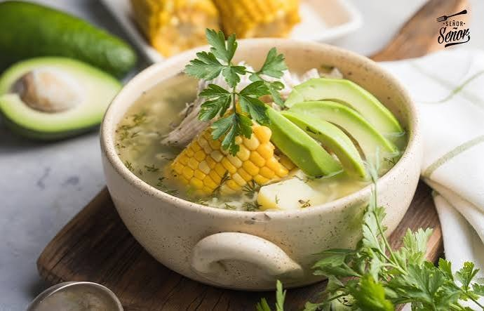

Ajiaco santafereño
Si hay un plato que representa a Bogotá es el ajiaco. Una sopa espesa y reconfortante, ideal para las tardes frías de la capital, que debe su sabor único a las guascas, una hierba de la sabana.
- Tiempo: 1 h 30 min
- Porciones: 6
- Dificultad: Media

El ajiaco se sirve con crema de leche, alcaparras y aguacate al lado.
Ingredientes
- 1,5 kg de pechuga o presas de pollo
- 1 kg de papa sabanera
- 1 kg de papa pastusa
- 500 g de papa criolla
- 3 mazorcas tiernas cortadas en trozos
- 2 tallos de cebolla larga
- 3 dientes de ajo
- 1 manojo de guascas
- 3 litros de agua
- Sal y pimienta al gusto
Para servir
- Crema de leche
- Alcaparras
- Aguacate
- Arroz blanco (opcional)
Preparación
- En una olla grande pon el agua con el pollo, la cebolla larga, el ajo y sal. Cocina a fuego medio durante 35 a 40 minutos, hasta que el pollo esté blando.
- Saca el pollo, déjalo enfriar un poco y desméchalo. Retira también la cebolla y el ajo del caldo.
- Pela la papa sabanera y la pastusa, córtalas en rodajas y agrégalas al caldo. Cocina unos 30 minutos revolviendo de vez en cuando, hasta que empiecen a deshacerse y espesen la sopa.
- Añade las mazorcas y la papa criolla pelada. Deja cocinar 20 minutos más.
- En los últimos 10 minutos agrega las guascas y el pollo desmechado. Ajusta la sal y la pimienta.
- Sirve bien caliente en plato hondo, con un trozo de mazorca, y acompaña con crema de leche, alcaparras y aguacate.
Míralo en video
Video: “El sabor de Colombia en tu cocina: aprende a cocinar ajiaco santafereño”, canal Achiote en YouTube.